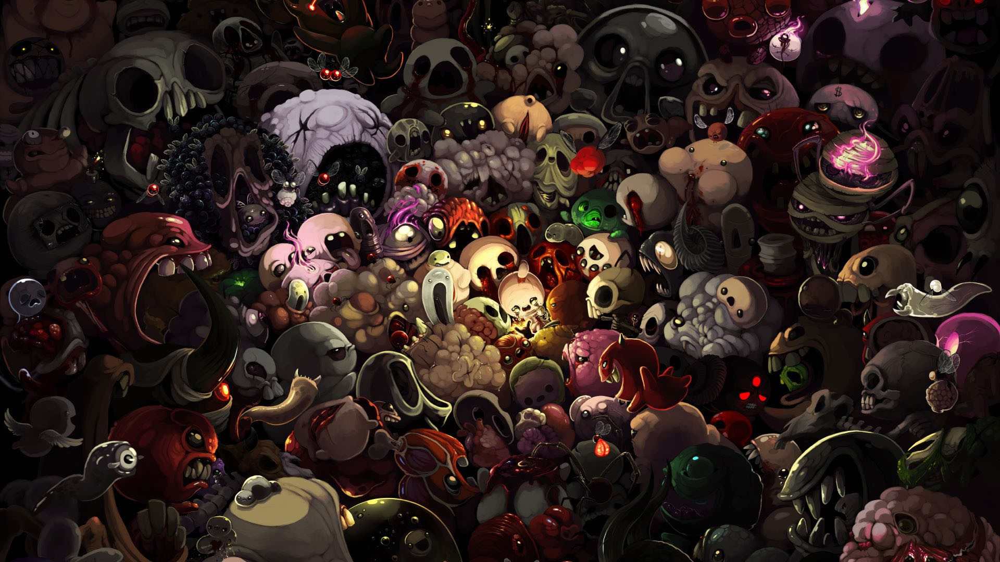

Enter the Gungeon (с англ. — «Вход в оружелье», игра слов «gun» и «dungeon») — компьютерная игра в жанре roguelike с видом сверху, выпущенная 5 апреля 2016 года на платформах Windows, macOS, Linux и PlayStation 4, 5 апреля 2017 года на Xbox One и 14 декабря 2017 года на Nintendo Switch[1]. Разработчиком игры является компания Dodge Roll[2], а издателем — Devolver Digital[2]. 5 апреля 2019 года вышло последнее, как сообщили сами разработчики, бесплатное обновление под названием «A Farewell to Arms»[3]. На сайте Metacritic рейтинг версии игры для персональных компьютеров составляет 84 из 100[4], а версии для PlayStation 4 82 из 100[5]. В 2020 году на платформу ios вышла мобильная версия игры Exit the gungeon (с англ. - <<выход из Оружелья>> ) вся механика которой завязана на лифтах.

The Binding of Isaac: Repentance
The Binding of Isaac (с англ. — «Жертвоприношение Исаака») — компьютерная игра в жанре action-adventure с элементами roguelike и шутера с видом сверху, разработанная Эдмундом Макмилленом и Флорианом Химслом. Игра, разработанная на платформе Adobe Flash, первоначально была выпущена для Windows в 2011 году через платформу цифровой дистрибуции Steam; позже The Binding of Isaac стала доступна на Linux и macOS. В 2014 году был выпущен ремейк игры — The Binding of Isaac: Rebirth — портированный на ряд платформ, включая игровые приставки.
Dead Cells
Dead Cells — это экшн-платформер в жанре Rogue-like и Metroidvania. Вас ждет огромный, постоянно меняющийся замок... Если, конечно, вы сможете победить тех, кто встанет у вас на пути, в 2D-схватках в стиле Souls-lite. Без сохранений. Убивайте, умирайте, учитесь и пробуйте снова.
Персонажи Enter The Gungeon:
Преступница (англ. The Convict) — одна из четырёх основных оружельцев в Enter the Gungeon.
Темнокожая девушка с сиреневыми волосами. Рядом с Охотницей всегда бегает её Пёс по кличке Джуниор II. Она вооружена арбалетом и своим ржавым пистолетом.
Десантник — чернокожий мужчина крепкого телосложения, с шрамом на правом глазу, одетый в бронежилет синего цвета и шлем с оранжевым стеклом и, предположительно, респиратором.
Пилот — уверенный в себе мужчина. Он храбр и не боится вступать в бой, даже если враг в 100 раз сильнее и больше его. У него есть верные отмычки, да и сам он неплохо владеет навыками красноречия.
Боевой робот белого цвета с бирюзовым дисплеем. На дисплей выводится его лицо в виде символов. В качестве стартового оружия использует свою правую руку, из которой стреляет наэлектризованными пулями.
Патронщик, который носит красный плащ. При перекате издаёт звук выстрела, а при ходьбе — звук падения гильз на пол.
Чтобы его открыть, нужно на втором, третьем, четвёртом или пятом этаже найти "космическую" лужу (шанс появления для каждого этажа 20%), после чего взаимодействовать с ней. Далее необходимо в этом же забеге убить прошлое или Лича. На этаже с лужей изменяется музыка. Лужа появляется только после того, как было убито хотя бы одно прошлое основного оружельца.
Стрелок — старик с длинной бородой, на поясе носит большое количество револьверов.
Персонажи The binding of Isaac:
Исаак (Isaac) — главный персонаж в игре и первый из доступных.
Магдалина (Magdalene) — разблокируемый персонаж в игре The Binding of Isaac: Rebirth.
Каин (Cain) — третий персонаж игры The Binding of Isaac: Rebirth.
Иуда (Judas) — четвёртый персонаж игры The Binding of Isaac: Rebirth. Очень эффективен в нахождении дьявольских\ангельских комнат из-за стартового артефакта.
???/Синий Малыш (Blue Baby) — пятый персонаж в игре The Binding of Isaac: Rebirth.
Ева (Eve) — шестой персонаж в игре.
Самсон (Samson) — седьмой персонаж в игре The Binding of Isaac: Rebirth. Изображен с длинными волосами и повязкой на лоб (которая досталась ему от начального предмета).
Лазарь (Lazarus) — восьмой персонаж в The Binding of Isaac: Rebirth.
Азазель (Azazel) — девятый персонаж игры The Binding of Isaac: Rebirth.
Эдем (Eden) ― десятый персонаж в игре The Binding of Isaac: Rebirth.
Потерянный (The Lost) — секретный разблокируемый персонаж из игры The Binding of Isaac: Rebirth.
Персонаж Dead cells:
Безымянный - главный протагонист игры Dead Cells, представляющий из себя маленький светящийся камень. Вываливается из сточных труб, после чего вселяется в первый попавшийся труп тюрьмы. На этом начинается игра.